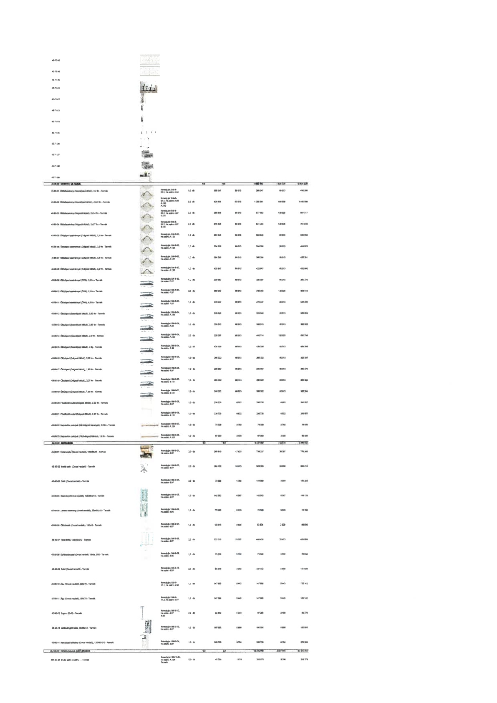

| Tétel | Megjegyzés | Menny. | Egys. | Anyag e.ár (net HUF) | Díj e.ár (net HUF) | Anyag összesen (net HUF) | Díj összesen (net HUF) | Anyag+Díj összesen (net HUF) |
|---|---|---|---|---|---|---|---|---|
| 45-80-01 Öltözőszekrény (Személyzeti öltöző), 3,2 fm - Termék | Konszig jel: BM-8-01.1 | 1,0 | db | 388 047 | 60 013 | 388 047 | 60 013 | 448 060 |
| 45-80-02 Öltözőszekrény (Személyzeti öltöző), 10,0 fm - Termék | Konszig jel: BM-8-01.1 | 3,0 | db | 428 354 | 60 013 | 1 285 061 | 180 038 | 1 465 099 |
| 45-80-03 Öltözőszekrény (Dolgozói öltöző), 2x2,4 fm - Termék | Konszig jel: BM-8-01.2 | 2,0 | db | 288 946 | 60 013 | 577 892 | 120 025 | 697 917 |
| 45-80-04 Öltözőszekrény (Dolgozói öltöző), 2x2,7 fm - Termék | Konszig jel: BM-8-01.2 | 2,0 | db | 315 646 | 60 013 | 631 293 | 120 025 | 751 318 |
| 45-80-05 Öltözőpad szekrénnyel (Dolgozói öltöző), 2,1 fm - Termék | Konszig jel: BM-8-02 | 1,0 | db | 262 046 | 60 013 | 262 046 | 60 013 | 322 059 |
| 45-80-06 Öltözőpad szekrénnyel (Dolgozói öltöző), 3,0 fm - Termék | Konszig jel: BM-8-02 | 1,0 | db | 354 358 | 60 013 | 354 358 | 60 013 | 414 372 |
| 45-80-07 Öltözőpad szekrénnyel (Dolgozói öltöző), 3,6 fm - Termék | Konszig jel: BM-8-02 | 1,0 | db | 388 269 | 60 013 | 388 269 | 60 013 | 448 281 |
| 45-80-08 Öltözőpad szekrénnyel (Dolgozói öltöző), 3,9 fm - Termék | Konszig jel: BM-8-02 | 1,0 | db | 422 847 | 60 013 | 422 847 | 60 013 | 482 860 |
| 45-80-09 Öltözőpad szekrénnyel (ÖV6), 1,8 fm - Termék | Konszig jel: BM-8-03 | 1,0 | db | 220 357 | 60 013 | 220 357 | 60 013 | 280 370 |
| 45-80-10 Öltözőpad szekrénnyel (ÖV6), 3,1 fm - Termék | Konszig jel: BM-8-03 | 2,0 | db | 369 247 | 60 013 | 738 494 | 120 025 | 858 519 |
| 45-80-11 Öltözőpad szekrénnyel (ÖV6), 4,5 fm - Termék | Konszig jel: BM-8-03 | 1,0 | db | 476 447 | 60 013 | 476 447 | 60 013 | 536 460 |
| 45-80-12 Öltözőpad (Személyzeti öltöző), 3,00 fm - Termék | Konszig jel: BM-8-04 | 1,0 | db | 329 046 | 60 013 | 329 046 | 60 013 | 389 059 |
| 45-80-13 Öltözőpad (Személyzeti öltöző), 2,85 fm - Termék | Konszig jel: BM-8-04 | 1,0 | db | 333 513 | 60 013 | 333 513 | 60 013 | 393 526 |
| 45-80-14 Öltözőpad (Személyzeti öltöző), 2,2 fm - Termék | Konszig jel: BM-8-04 | 2,0 | db | 220 357 | 60 013 | 440 714 | 120 025 | 560 739 |
| 45-80-15 Öltözőpad (Személyzeti öltöző), 4 fm - Termék | Konszig jel: BM-8-04 | 1,0 | db | 434 336 | 60 013 | 434 336 | 60 013 | 494 349 |
| 45-80-16 Öltözőpad (Dolgozói öltöző), 3,22 fm - Termék | Konszig jel: BM-8-05 | 1,0 | db | 265 322 | 60 013 | 265 322 | 60 013 | 325 334 |
| 45-80-17 Öltözőpad (Dolgozói öltöző), 1,85 fm - Termék | Konszig jel: BM-8-05 | 1,0 | db | 220 357 | 60 013 | 220 357 | 60 013 | 280 370 |
| 45-80-18 Öltözőpad (Dolgozói öltöző), 2,27 fm - Termék | Konszig jel: BM-8-05 | 1,0 | db | 265 322 | 60 013 | 265 322 | 60 013 | 325 334 |
| 45-80-19 Öltözőpad (Dolgozói öltöző), 1,85 fm - Termék | Konszig jel: BM-8-05 | 1,0 | db | 265 322 | 60 013 | 265 322 | 60 013 | 325 334 |
| 45-80-20 Fésülködő asztal (Dolgozói öltöző), 2,22 fm - Termék | Konszig jel: BM-8-06 | 1,0 | db | 238 735 | 9 822 | 238 735 | 9 822 | 248 557 |
| 45-80-21 Fésülködő asztal (Dolgozói öltöző), 2,27 fm - Termék | Konszig jel: BM-8-06 | 1,0 | db | 238 735 | 9 822 | 238 735 | 9 822 | 248 557 |
| 45-80-22 Hajszárító polc/pult (Női dolgozói zuhanyzó), 2,0 fm - Termék | Konszig jel: BM-8-07 | 1,0 | db | 73 328 | 2 702 | 73 328 | 2 702 | 76 030 |
| 45-80-23 Hajszárító polc/pult (Férfi dolgozói öltöző), 1,9 fm - Termék | Konszig jel: BM-8-08 | 1,0 | db | 67 000 | 2 489 | 67 000 | 2 489 | 69 489 |
| 45-90-00 RENDELŐ | NaN | 0 | NaN | 0 | 0 | 3 127 058 | 242 578 | 3 369 637 |
| 45-90-01 Irodai asztal (Orvosi rendelő), 160x80x75 - Termék | Konszig jel: BM-9-01 | 2,0 | db | 369 619 | 17 633 | 739 237 | 35 267 | 774 504 |
| 45-90-02 Irodai szék (Orvosi rendelő) - Termék | Konszig jel: BM-9-02 | 2,0 | db | 264 130 | 16 975 | 528 260 | 33 950 | 562 210 |
| 45-90-03 Szék (Orvosi rendelő) - Termék | Konszig jel: BM-9-04 | 2,0 | db | 73 328 | 1 753 | 146 656 | 3 506 | 150 162 |
| 45-90-04 Szekrény (Orvosi rendelő), 120x45x210 - Termék | Konszig jel: BM-9-05 | 1,0 | db | 142 562 | 6 567 | 142 562 | 6 567 | 149 129 |
| 45-90-05 Zárható szekrény (Orvosi rendelő), 55x45x210 - Termék | Konszig jel: BM-9-06 | 1,0 | db | 73 328 | 3 378 | 73 328 | 3 378 | 76 706 |
| 45-90-06 Öltözőszék (Orvosi rendelő), 133x45 - Termék | Konszig jel: BM-9-07 | 1,0 | db | 83 878 | 2 628 | 83 878 | 2 628 | 86 506 |
| 45-90-07 Paravánfal, 138x45x210 - Termék | Konszig jel: BM-9-08 | 2,0 | db | 222 219 | 10 237 | 444 438 | 20 473 | 464 911 |
| 45-90-08 Dohányzóasztal (Orvosi rendelő, Váró), Ø30 - Termék | Konszig jel: BM-9-09 | 1,0 | db | 73 328 | 2 702 | 73 328 | 2 702 | 76 030 |
| 45-90-09 Fotel (Orvosi rendelő) - Termék | Konszig jel: BM-9-10 | 2,0 | db | 63 576 | 2 343 | 127 152 | 4 686 | 131 838 |
| 45-90-10 Ágy (Orvosi rendelő), 200x70 - Termék | Konszig jel: BM-9-11 | 1,0 | db | 147 899 | 5 443 | 147 899 | 5 443 | 153 342 |
| 45-90-11 Ágy (Orvosi rendelő), 190x70 - Termék | Konszig jel: BM-9-11 | 1,0 | db | 147 899 | 5 443 | 147 899 | 5 443 | 153 342 |
| 45-90-12 Fogas, 60x10 - Termék | Konszig jel: BM-9-12 | 2,0 | db | 33 649 | 1 240 | 67 299 | 2 480 | 69 779 |
| 45-90-13 Látásvizsgáló tábla, 45x65x13 - Termék | Konszig jel: BM-9-13 | 1,0 | db | 160 058 | 5 898 | 160 058 | 5 898 | 165 955 |
| 45-90-14 Kartonozó szekrény (Orvosi rendelő), 120x80x210 - Termék | Konszig jel: BM-9-14 | 1,0 | db | 255 786 | 9 794 | 255 786 | 9 794 | 265 580 |
| 45-100-00 KERESKEDELMI, RAKTÁROZÁSI | NaN | NaN | NaN | 0 | 0 | 0 | 0 | 0 |
| 451-02-01 Irodai szék (raktár), - Termék | Konszig jel: BM-10-04 | 5,0 | db | 40 795 | 1 878 | 203 976 | 9 398 | 213 374 |
